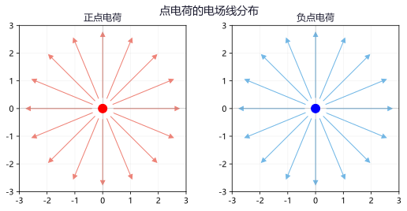
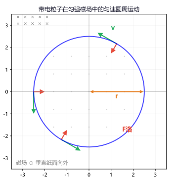
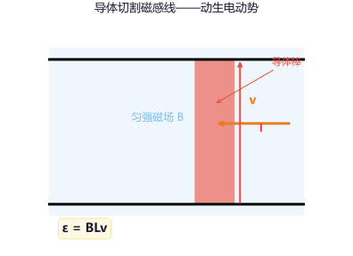

专题一：静电场
静电场电荷与库仑定律：点电荷间的作用力满足 F = k|q₁q₂|/r²（k=9×10⁹ N·m²/C²）。同种电荷相互排斥，异种电荷相互吸引。电荷守恒定律：电荷既不能创造也不能消灭，只能从一个物体转移到另一个物体。
电场强度：E = F/q（定义式），单位 N/C 或 V/m。点电荷的电场 E = kQ/r²。电场强度是矢量，方向与正电荷在该点所受电场力方向相同。
电场线：从正电荷出发终止于负电荷（或无穷远），疏密表示场强大小。电场线不相交，不闭合。匀强电场的电场线是平行等距的直线。
电势与电势差：U_AB = φ_A − φ_B = W_AB/q。电场力做功与路径无关：W_AB = qU_AB。沿着电场线方向电势逐渐降低。等势面：在同一等势面上移动电荷电场力不做功，等势面⊥电场线。
电容器与电容：C = Q/U = εS/(4πkd)（平行板电容器）。电容表征电容器容纳电荷的本领，与 Q、U 无关。平行板电容器充电后保持与电源相连则 U 不变，断开电源则 Q 不变。

= 9×10⁹ × 8×10⁻¹⁶/0.01 = 7.2×10⁻⁴ N。
异种电荷相互吸引。
场强与试探电荷无关，E 不变仍为 5000 N/C。
F' = q'E = (−2×10⁻⁹)×5000 = −1×10⁻⁵ N（负号表示方向与 E 相反）。
U_AB > 0 → φ_A > φ_B，电势从 A 到 B 降低了 2000V。
Q = CU = 4.43×10⁻¹¹×100 = 4.43×10⁻⁹C。
断开电源后 Q 不变。d 增大到 2 倍 → C 减半 → U=Q/C 增大到 2 倍。
专题二：恒定电流
恒定电流电流：I = q/t。规定正电荷定向移动的方向为电流方向。金属导体中为自由电子的定向移动形成电流，但电流方向与电子移动方向相反。
欧姆定律：I = U/R（适用于金属导体和电解液，不适用于气体导电和半导体）。电阻定律：R = ρL/S，ρ 为电阻率，随温度升高而增大（金属）。
串并联电路：
串联：I 相等，U 分压，R = R₁+R₂+…，U₁/U₂ = R₁/R₂
并联：U 相等，I 分流，1/R = 1/R₁+1/R₂+…，I₁/I₂ = R₂/R₁
电功与电功率：W = UIt（焦耳定律：Q = I²Rt，纯电阻电路中 Q = W）。P = UI（纯电阻 P=I²R=U²/R）。电源功率：P总=EI，P出=UI，P内=I²r。

I_total = U/R = 12/4 = 3A。
I₁ = U/R₁ = 12/6 = 2A，I₂ = U/R₂ = 12/12 = 1A。
I₁+I₂=3A 等于总电流。✓
路端电压 U = IR = 2×5 = 10V。
内电压 U' = Ir = 2×1 = 2V。
验证：U + U' = 10+2 = 12V = E。✓
R = U²/P = 220²/100 = 48400/100 = 484Ω（热态电阻，冷态更小）。
专题三：磁场
磁场重点磁感应强度：B = F/(IL)（定义式），单位特斯拉（T）。方向为小磁针 N 极受力方向。磁感线：闭合曲线，外部从 N→S，内部从 S→N。
安培力：F = BIL sinθ（θ 为 B 与 I 的夹角）。方向用左手定则判断：伸开左手，使拇指与其余四指垂直，让磁感线垂直穿入手心，四指指向电流方向，拇指所指方向即为安培力方向。
洛伦兹力：F = qvB sinθ（θ 为 v 与 B 的夹角）。方向同样用左手定则判断（注意负电荷的等效电流方向与运动方向相反）。洛伦兹力永远不做功，只改变速度方向不改变速度大小。
带电粒子在匀强磁场中的运动：当 v⊥B 时，做匀速圆周运动。
轨道半径：r = mv/(qB)；周期：T = 2πm/(qB)（与速度、半径无关！）。

= 1.328×10⁻²⁰/(1.6×10⁻¹⁹) = 0.083 m = 8.3 cm。
T = 2πm/(qB) = 2×3.14×6.64×10⁻²⁷/(3.2×10⁻¹⁹×0.5)
= 4.17×10⁻²⁶/(1.6×10⁻¹⁹) = 2.6×10⁻⁷ s。
= 3.64×10⁻²⁴/(3.2×10⁻²⁰) = 1.14×10⁻⁴ m = 0.114 mm。
专题四：电磁感应
电磁感应核心法拉第电磁感应定律：感应电动势的大小与穿过回路的磁通量的变化率成正比。
E = n·ΔΦ/Δt（n 为线圈匝数，Φ=BScosθ）。
导体切割磁感线：当导体在磁场中做切割磁感线运动时产生感应电动势。
E = BLv sinθ（θ 为 v 与 B 的夹角）。平动切割时 E=BLv（B⊥L⊥v）。
楞次定律：感应电流的磁场总要阻碍引起感应电流的磁通量的变化。口决：增反减同，来拒去留。
右手定则：伸开右手，让磁感线穿入手心，拇指指向导体运动方向，四指指向感应电流方向。
感生电动势与动生电动势：
① 感生电动势：磁场变化产生涡旋电场，E = n·S·ΔB/Δt（S 为面积）。
② 动生电动势：导体切割磁感线，E = BLv。在匀强磁场中转动时 E = ½BωL²。
自感现象：由于导体自身电流变化而产生的电磁感应现象。自感系数 L 与线圈的形状、大小、匝数以及有无铁芯有关。


I = E/R = 1.2/2 = 0.6 A。由右手定则判断电流方向。
I₀=E₀/R=1.2/0.5=2.4A。
安培力 F₀=BIL=0.5×2.4×0.4=0.48N，阻碍运动。
棒做减速运动，v↓→E↓→I↓→F↓，最终 趋于静止。
（若有外力维持则最终可能匀速，平衡时 F_ext = F_安 = B²L²v/R）
专题五：交变电流
交变电流正弦式交流电：线圈在匀强磁场中绕垂直于磁场的轴匀速转动产生。
e = Eₘ sin ωt，其中 Eₘ = nBSω（电动势峰值）。
i = Iₘ sin(ωt − φ)，u = Uₘ sin(ωt − φ′)。
有效值：交流电与直流电在相同时间内通过同一电阻产生相同热量的等效值。
E = Eₘ/√2，U = Uₘ/√2，I = Iₘ/√2（仅适用于正弦式交流电）。
变压器：U₁/U₂ = n₁/n₂。理想变压器：P₁ = P₂ → U₁I₁ = U₂I₂ → I₁/I₂ = n₂/n₁。
远距离输电：P_损 = I²R_线。提高输电电压可减小电流，从而减小线路损耗。高压输电：升压→传输→降压。

ω=314 rad/s，f=ω/(2π)=314/6.28=50 Hz。T=1/f=0.02 s。
I₂ = U₂/R = 10/10 = 1 A。
P₂ = U₂I₂ = 10×1 = 10W。理想变压器 P₁ = P₂ = 10 W。
I₁ = P₁/U₁ = 10/220 ≈ 0.045 A。
一个周期 T=0.02s，Q=40J。
I² = 40/(5×0.02) = 400 → I = 20 A。
升压后 U₂=400×25=10000V，I₂=P/U₂=100000/10000=10A。
P_损=I₂²R=10²×10=1 kW（占 1%）。
线路压降 ΔU=I₂R=10×10=100V，末端电压 U=10000−100=9900 V。
专题六：电磁综合
电磁综合压轴带电粒子在复合场中的运动："复合场"指电场、磁场、重力场的组合。常见模型：
速度选择器：E 和 B 正交，qE = qvB → v = E/B 的粒子沿直线通过，与电荷正负和质量无关。
质谱仪：粒子在电场中加速 qU = ½mv²，进入磁场偏转 r = mv/(qB)。由 r 测量质量或比荷。
比荷 q/m = 2U/(B²r²)。
回旋加速器：D 形盒在磁场中回旋，缝隙间电场加速。粒子最终速度 v_max = qBR/m，最大动能 E_k = q²B²R²/(2m)，与加速电压无关。
电磁感应综合：导体棒在磁场中运动，涉及牛顿定律、动量定理、能量守恒。常见问题包括含容电路、含电源电路、双棒模型等。
与电荷正负、质量、电量均无关。
若 v 偏大，qvB > qE，正电荷向上偏（B 方向），负电荷向下偏。
偏转过程：qvB = mv²/r → v = qBr/m。
联立：√(2qU/m) = qBr/m → 2qU/m = q²B²r²/m²
q/m = 2U/(B²r²) = 2×1000/(0.2²×0.125²) = 2000/(0.04×0.015625)
= 2000/0.000625 = 3.2×10⁶ C/kg。
≈ 7.19×10⁷ m/s。
E_k = ½mv_max² = ½×1.67×10⁻²⁷×(7.19×10⁷)² = 4.32×10⁻¹² J。
换算为 eV：E_k = 4.32×10⁻¹²/(1.6×10⁻¹⁹) ≈ 27 MeV。
每圈加速 2 次，每次增加 2qU=2×50=100keV。
圈数 n = 27×10³/100 ≈ 270 圈。
F_安 = BIL = B·(BLv/R)·L = B²L²v/R。
F = B²L²v_m/R → v_m = FR/(B²L²) = 1×4/(0.8²×0.5²) = 4/(0.64×0.25) = 25 m/s。
（2）最大功率 P = F·v_m = 1×25 = 25 W。
此时 P 全部转化为电阻上的热功率：P = I²R = (BLv_m/R)²R = B²L²v_m²/R = (0.4)²×625/4 = 25W ✓
电容器两端电压 U = E = 0.4V。
Q = CU = 10×10⁻⁶×0.4 = 4×10⁻⁶ C = 4 μC。